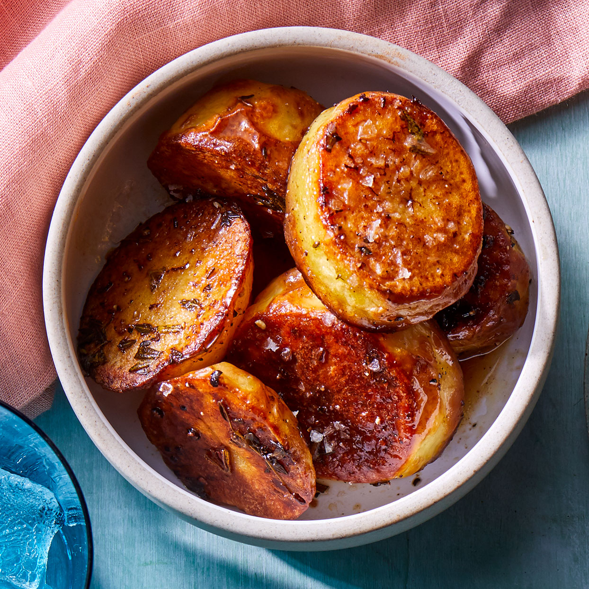

Melting Potatoes

Description
True to their name, melting potatoes have a creamy texture that melts in your
mouth while on the outside, they have a crispy flavorful crust. The juxtaposition
of these two textures is the result of using both dry and moist heat cooking methods.
The potatoes are roasted in a hot oven for 30 minutes (dry heat), then broth is added
and they are returned to the oven to finish cooking (moist heat). The dry heat gives
them a crispy outer crust, while the moist heat steams and infuses them with flavor
(and moisture) making them extra creamy in the center
Ingredients
- 2 pounds Yukon Gold potatoes, peeled and cut into 1-inch slices
- 2 tablespoons butter, melted
- 2 tablespoons extra-virgin olive oil
- 2 teaspoons chopped fresh thyme
- 1 teaspoon chopped fresh rosemary
- 3/4 teaspoon salt
- 1/2 teaspoon ground pepper
- 1 cup low-sodium vegetable broth or chicken broth
- 5 cloves garlic, peeled and smashed
Steps
- Position rack in upper third of oven; preheat to 260°C.
- Toss potatoes, butter, oil, thyme, rosemary, salt and pepper in a large bowl.
Arrange in a single layer in a 9-by-13-inch metal baking pan. (Do not use a
glass dish, which could shatter.) Roast, flipping once, until browned, about 30 minutes.
- Carefully add broth and garlic to the pan. Continue roasting until most of the broth is
absorbed and the potatoes are very tender, about 15 minutes more. Serve hot.
Home page